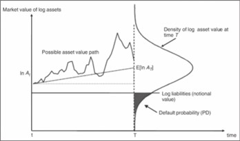

This is an Article Template
1. CynoRisk Analytics Inc. Mathematics Analytics and Data Science Lab, The Fields Institute for Research in Mathematics Sciences, 222 College Street, Toronto, ON, M5T 3J1, Canada
2. Department of Mathematics and Statistics, York University, 4700 Keele Street, Toronto, ON M3J 1P3, Canada
\(dA = \mu A dt + \sigma A dW(t) \quad [3] \)
|
Figure 1. The Merton Model  |
| Portfolio | Credit Spread | Gov Interest Rate | Interest Rate Corp | Unemployment Rate | GDP | Equity Return | Equity Vol |
|---|---|---|---|---|---|---|---|
| Small Commercial | CorpBBB10Y, 30%, 2Q lag | Gov10Y, 20%, 3Q lag | 50%, 3Q lag | ||||
| Large Commercial | CorpBBB10Y, 50%, 3Q lag | Gov10Y, 20%, no lag | 30%, 3Q lag | ||||
| Corporate | CorpBBB10Y, 40%, no lag | 30%, 3Q lag | Equity Vol, 30%, 3Q lag |
[1] Merton, R.C. “On the Pricing of Corporate Debt: The Risk Structure of Interest Rates,” Journal of Finance, 29: 449-70 (1974)
[2] Crosbie, P., Bohn, J., “Modeling Default Risk. Modeling Methodology.” Moody’s KMV (2003)
[3] Gupton, G.M., J.P. Morgan & Co, C. C. Finger, and M. Bhatia, “CreditMetrics - Technical Document: The Benchmark for Understanding Credit Risk,” 1997
[4] Tazhi Y., E. Wang, Z. Hu, and M. A. Clayton, “Transition Probability Matrix Methodology for Incremental Risk Charge,”, Journal of Financial Engineering, Vol. 01, No. 01, 1450010 (2014)
[5] Albanese C. and O. Chen, “Implied migration rates from credit barrier models,” Journal of Banking & Finance, vol 30, 607-626 (2006)
[6] Hull, J., I. Nelken, and A. White, “Merton’s model, Credit Risk, and Volatility Skews”, Journal of Credit Risk, Vol 1, No. 1, 3-27 (2005)
[7] Moody’s Investors Service, “Default Trends -Global, December 2021 Default Report,” January 2022
[8] International Accounting Standards Board (IASB), “IFRS 9 Financial instruments. International Accounting Standards Board.” (2014), https://www.ifrs.org/issued-standards/list-of-standards/ifrs-9-financial-instruments/
[9] Yang, B. H, “Point-in-time” Probability of Default Term Structure Models for Multiperiod Scenario Loss Projection,” Journal of Risk Model Validation, Vol 11, No. 1, 73-94 (2017)
[10] Vasicek, O. “Loan Portfolio Value,” Risk (December 2002), 160-62
[11] Huang, H., E. Wang, H. Huang, and Y. Wang, “An Analytical VaR Approach for Credit Portfolio with Liquidity Horizon and Portfolio Rebalancing,” Journal of Credit Risk 11(4), 1-28 (2015)
[12] Hosseini H., C Johnston, C. Logan, M. Molico, S. Shen, and M. Tremblay, “Assessing Climate-Related Financial Risk: Guide to Implementation of Methods., Bank of Canada Technical Report (2022)
[13] Basel Committee on Banking Supervision, “Minimum capital requirements for market risk,” January (2019), https://www.bis.org/bcbs/publ/d457.htm